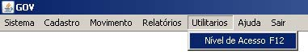
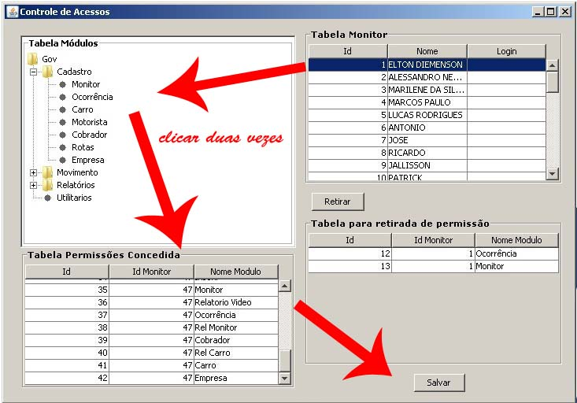
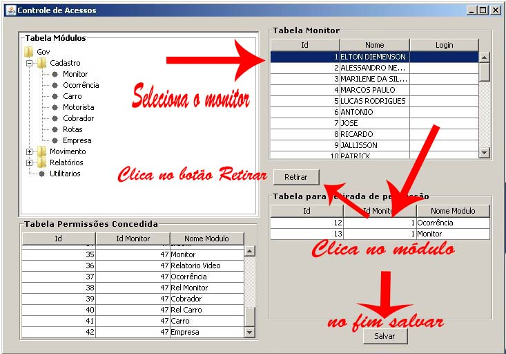

|
Controle de Acesso |
|
|
Iniciaremos o controle de acesso.
Neste módulo o usuário administrador fornecerar acesso ou não aos demais usuários nas telas abaixo demostraremos o processo para fornecer e retirar acesso aos módulos do gov

Conforme as setas da tela abaixo, para que o usuário administrador possa fornecer acesso a outro usuário, basta clicar na tabela de monitor que fornecer o id nome do monitor e login após isso clique no módulo desejado duas vezes que descera para a tabela de permissão concedida após isso basta clicar em salvar e pronto módulo concedido com sucesso.

Conforme as setas da tela abaixo, para que o usuário administrador possa retirar acesso de outro usuário, basta clicar na tabela de monitor que fornecer o id nome do monitor e login após isso clique na tabela para retirada de permissão que aparece abaixo da tabela de monitor e em seguida clique no botão retirar após isso o módulo sumira da tabela de retirada de permissão, para concretizar essa retirada clique em salvar
